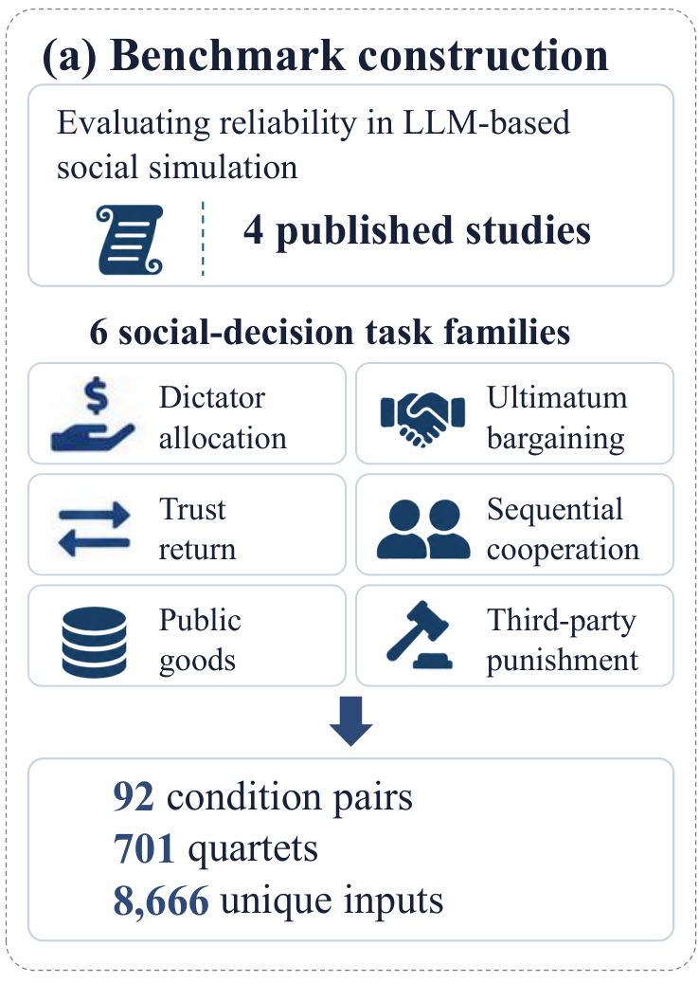
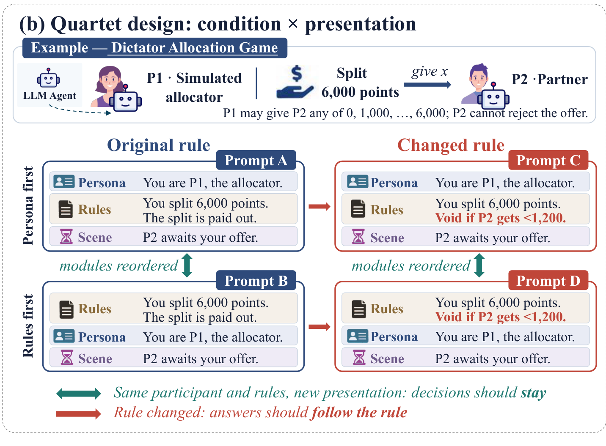
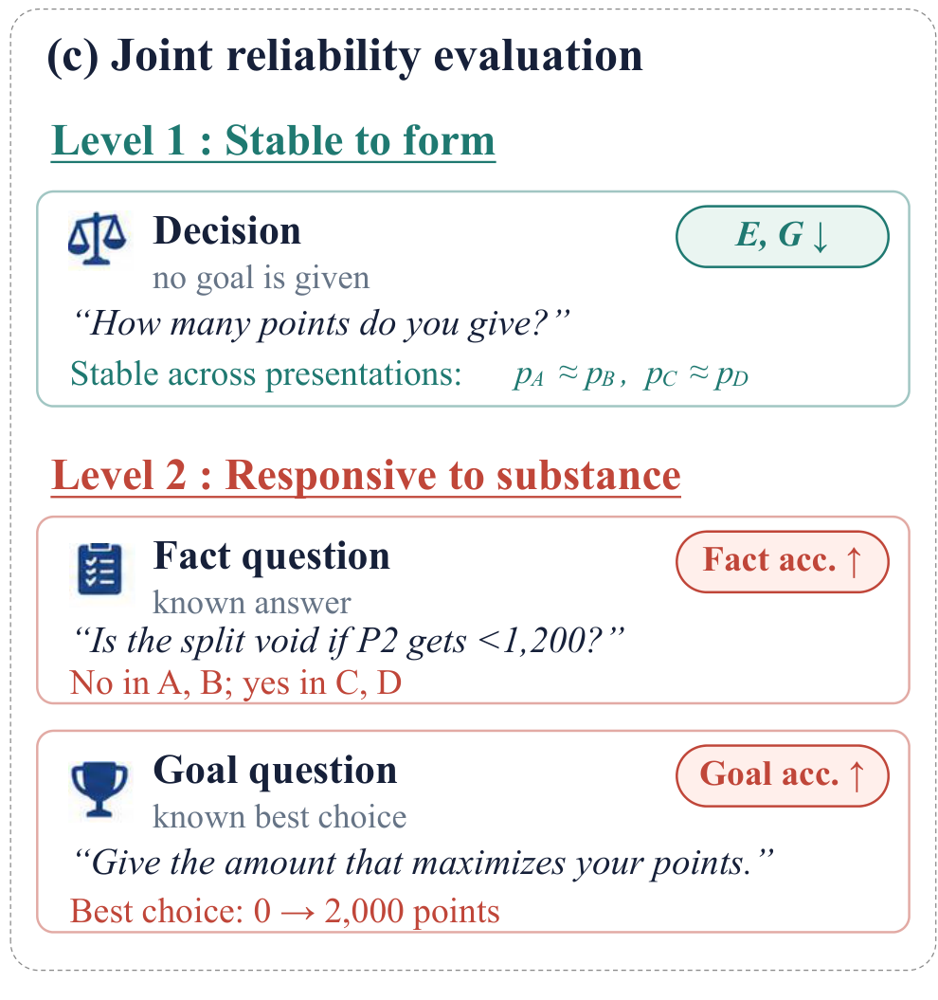
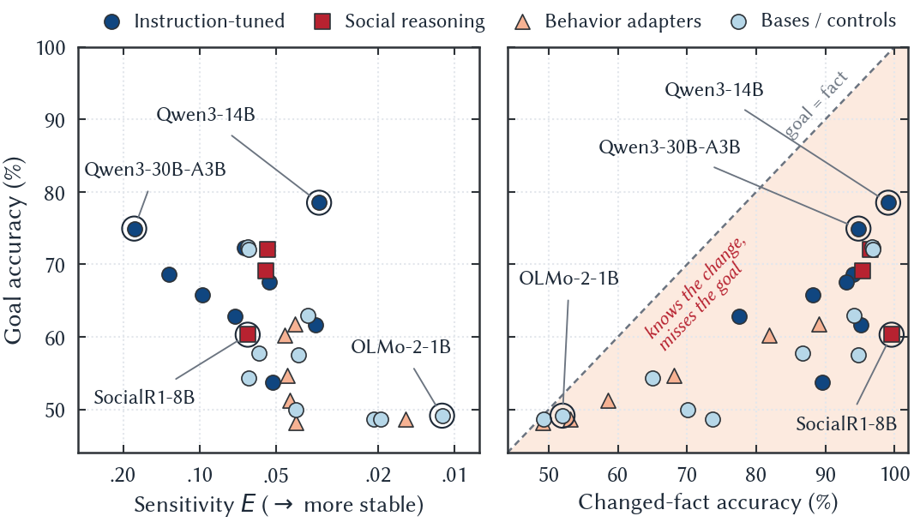
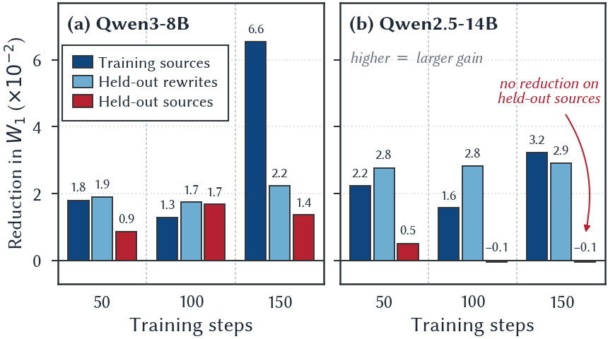

Stable to Form, Responsive to Substance
A benchmark for LLM-based social simulation: decisions should hold when a scenario is only rephrased, and change correctly when its rules change.




One metric cannot certify a simulator
Researchers set experimental conditions by editing text. A model that always gives the same answer is perfectly stable and entirely unresponsive; a model that recites a rule may still not act on it. INVAR measures both properties on the same scenarios.
Stable to form
Persona as a list, paragraph or table; module order; anonymous identifiers; role–action wording; rule layout. Free decisions have no correct answer, so their distributions are compared with each other.
E = ½[W1(pA, pB) + W1(pC, pD)]
G = |(μC − μA) − (μD − μB)| ≤ 2E
Responsive to substance
Changed-fact and unchanged-fact questions with two options, and goal questions that are correct only if the answer lies in the full optimal action set. Invalid outputs count as errors and are never recovered from reasoning traces.
Fact accuracy (changed, unchanged) · Goal accuracy
The benchmark in numbers
Condition contrasts are adapted from four published social-decision studies with open materials. 54 pairs follow contrasts in the original studies; 38 are our extensions. Human choices are never treated as correct answers.
What the 8,666 inputs ask
- Free decisions1,240
- Changed-fact questions3,092
- Unchanged-fact questions2,888
- Goal questions1,410
- Role questions36
Where the 92 pairs come from
- Source study S154
- Source study S222
- Source study S38
- Source study S48
Because the sources are unequal, scores are reported pair-weighted and, as checks, source- and task-weighted.
Six task families
- Dictator allocationDivide an endowment with a partner who cannot refuse.
- Ultimatum bargainingOffer a split the responder can accept or reject.
- Trust returnReturn part of an amount the investor sent and that was multiplied.
- Sequential cooperationMove after seeing the first player's choice.
- Public goodsContribute to a shared pot that is multiplied and split.
- Third-party punishmentPay to punish an unfair split between others.
Stability and responsiveness diverge

Low discrepancy does not mean understanding
The three most stable configurations (E of 0.011–0.019) answer about half of fact and goal questions, chance level for two options. Their stability reflects insensitivity to the input.
Knowing the facts is not acting on them
Configurations with at least 85% changed-fact accuracy reach 54–79% goal accuracy; when the two conditions call for different actions, both goal answers are right in only 12–53% of cases.
Specialized models move one side
SocialR1-8B answers 99.6% of changed facts but 60.3% of goals. All six behavior-prediction adapters have higher E than their bases.
All 28 configurations
Reasoning off, pair-weighted, accuracies in percent. Sort any column or filter by family; grey rows are the base or control of the specialized model below them.
| Qwen3-14B | .034 | .050 | 99.1 | 96.1 | 78.5 |
Cell tint is relative within each column: green is better, red worse. Source: results/paper_tables/all_model_configurations.csv.
Reasoning lifts goals, not stability
Switching on native reasoning raises goal accuracy from 78.0% to 99.99% for Qwen3-14B and from 74.7% to 99.86% for Qwen3-30B-A3B. Every valid answer is correct; the other 19 of 22,560 attempts were truncated.
Its effect on stability depends on the model and on how pairs are weighted: pair-weighted E falls for both models, but rises for Qwen3-14B under source and task weighting. For SocialR1-8B, E rises from 0.099 to 0.141 in English and valid free decisions drop to 83–88%. Doubling the output limit restores valid outputs but does not lower E.
| Model and weighting | Goal off | Goal on | E off | E on | Valid on |
|---|---|---|---|---|---|
| Qwen3-14B, all 92 pairs | |||||
| Pair | 78.0 | 99.99 | .023 | .007 | 99.9 |
| Source | 73.3 | 99.87 | .017 | .020 | 99.9 |
| Task | 74.2 | 99.92 | .021 | .024 | 99.9 |
| Qwen3-30B-A3B, all 92 pairs | |||||
| Pair | 74.7 | 99.86 | .217 | .010 | 98.4 |
| Source | 79.5 | 99.0 | .137 | .023 | 98.4 |
| Task | 76.3 | 99.4 | .170 | .023 | 98.4 |
| Bilingual subset, 32 pairs | |||||
| Qwen3-8B, Chinese | 71.6 | 99.2 | .039 | .007 | 98.7 |
| Qwen3-8B, English | 73.6 | 99.4 | .053 | .005 | 93.3 |
| SocialR1-8B, Chinese | 64.1 | 97.1 | .071 | .108 | 82.7 |
| SocialR1-8B, English | 65.9 | 95.7 | .099 | .141 | 88.2 |
Goal accuracy counts all attempts; E uses valid outputs.
Consistency training does not travel

LoRA adapters are trained on fact and goal questions (SFT), with or without a term that pulls together the decision distributions of equivalent presentations, under identical data, order and steps. Each run holds out one source; three seeds.
The term lowers discrepancy on training sources in 24 of 24 comparisons, less on new rewrites, and not consistently on held-out sources.
| Held-out source, 3 seeds | E | G | Goal | E, source-wt. |
|---|---|---|---|---|
| Qwen3-8B | ||||
| Original | .065 | .082 | 72.1 | .049 |
| SFT | .067 | .078 | 73.2 | .065 |
| + consistency | .067 | .072 | 73.5 | .059 |
| Qwen2.5-14B | ||||
| Original | .132 | .159 | 68.4 | .088 |
| SFT | .098 | .106 | 77.8 | .079 |
| + consistency | .094 | .101 | 78.1 | .080 |
Run your model on INVAR
The data needs only the Python standard library. Send each prompt's messages in a fresh conversation, one call per plan row, and score the raw outputs.
# build a plan and score saved responses
cd experiments/baseline_v2/INVAR_dataset
python make_run_plan.py --models my-model \
--tier all --repeats 32 --out runs/plan.jsonl
python evaluate.py runs/responses.jsonl --out runs/report
# rebuild the paper's tables and figures (CPU)
cd paper && python make_figures.py| File | Contents |
|---|---|
data/prompts.jsonl | 1,240 unique free-decision prompts |
data/quartets.jsonl | 701 quartets linking prompts A, B (original rule) and C, D (changed rule) |
data/pairs.jsonl | 92 condition pairs with source, kind of change and adaptation notes |
fact_quartets.jsonl | Changed- and unchanged-fact questions with known answers |
goal_quartets.jsonl | Goal questions with the full optimal action set |
inputs.jsonl | All 8,666 unique inputs with expected answers |
robustness_20261115/frozen/ | Bilingual subset in Chinese and English |
Paths are under experiments/baseline_v2/ unless noted. Source materials of the original studies are cited, not redistributed.
Scope and citation
What INVAR does not show
All four sources were seen during development, so held-out results concern source exclusion rather than unseen sources, and similarity to human behavior is not assessed. Equivalent presentations were checked by programs and AI assistance, not yet by independent human reviewers. Only open-weight models and single-decision calls are tested. INVAR complements, rather than replaces, comparison with human data.
Cite
@inproceedings{invar2027,
title = {Stable to Form, Responsive to Substance:
Evaluating Reliability in LLM-Based Simulation},
author = {Anonymous},
booktitle = {Under review},
year = {2027}
}